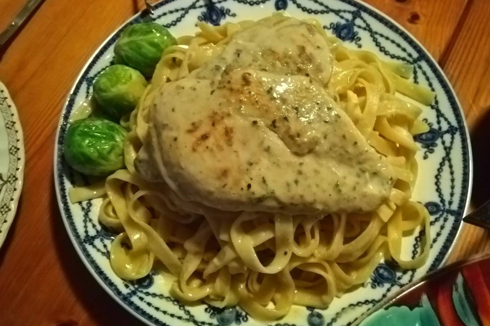

Dieting
Supermarket:
There are various foods in the supermarket, and the price is much cheaper than restaurants’ food. I recommend two big supermarkets, Tesco and Sainsbury’s. In addition to sandwich and salad, there are some delicious meals in the deli section. Two important things you can’t miss in the supermarket are fruits and dairy products. Their fruits are cheap and tasty and you can have a chance to try some fruits you never see before. The taste of strawberries in the UK is totally different from in Taiwan. Moreover, their milk and yogurt also have a lower price. They will be a good choice for breakfast.
 Bazaar:
Because I went to a lot of bazaars in the UK, I think it is a good place to eat some special food. And, I went with my friends, so we can try various foods and share together. Some foods are delicious there, but some are not tasty. It depends on your vision whether you will meet great food. The coolest thing I found in bazaar is that all the vendors accept credit card payment. Credit cards are quite common in England. Therefore, make sure you have a credit card that can use abroad.
Bazaar:
Because I went to a lot of bazaars in the UK, I think it is a good place to eat some special food. And, I went with my friends, so we can try various foods and share together. Some foods are delicious there, but some are not tasty. It depends on your vision whether you will meet great food. The coolest thing I found in bazaar is that all the vendors accept credit card payment. Credit cards are quite common in England. Therefore, make sure you have a credit card that can use abroad.
 Restaurants:
Though the restaurants are expensive, you should try some local food since you’ve already in the UK. Here I would introduce several foods I love. First is the representative food, fishes & chips. Because I only tried it once, I can’t recommend the restaurants to you. The only thing I can tell is that there are different kinds of fishes, so you can ask the waiter to recommend. Second, I strongly recommend a restaurant called Nando’s. It is actually a south African restaurant. Their grilled chickens are so delicious. Nando’s is a chain restaurant, so you can find it easily around the british street. Third, bun is also a famous food in England. I tried it in an unknown restaurant Sally Lunn’s. It is located in Bath. In addition to sweet taste, there is also salty one. But, I think that sweet is better. It is a great choice for afternoon tea.
Restaurants:
Though the restaurants are expensive, you should try some local food since you’ve already in the UK. Here I would introduce several foods I love. First is the representative food, fishes & chips. Because I only tried it once, I can’t recommend the restaurants to you. The only thing I can tell is that there are different kinds of fishes, so you can ask the waiter to recommend. Second, I strongly recommend a restaurant called Nando’s. It is actually a south African restaurant. Their grilled chickens are so delicious. Nando’s is a chain restaurant, so you can find it easily around the british street. Third, bun is also a famous food in England. I tried it in an unknown restaurant Sally Lunn’s. It is located in Bath. In addition to sweet taste, there is also salty one. But, I think that sweet is better. It is a great choice for afternoon tea.

Cooking
Cooking will be an interesting part when you travel abroad. Because I think foods in the UK are not varied compare to Taiwan, it is difficult to eat outside every day, and the costs will be too high. Also, our eating habits aren’t like theirs. Therefore, cooking by yourselves will be suitable. You can buy some special food ingredients in the supermarket, such as spaghetti with special shapes, strange vegetables you never saw. It is free for you to cook everything.